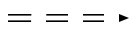
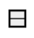
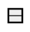
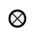
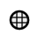

SCs-code
Warning
This documentation is correct for only versions of sc-machine that >= 0.9.0.
Common
SCs-code - is a text representation of SC-code. Whole text consist of sentences, that
separated by ;; symbols.
Comments
You can use C-style comments in sc.s-text:
Link to files
To make an sc-link into specified file you can use special type identifier:
"file://<file name>"- is a relative path to a file. According to a file, where it used;"file:///<file_name>"- is an absolute path to a file.
Names
There are some tricks with object names:
...- is an unnamed object;_<object name>- all object names, that starts with symbol_represents a variable type of objects.
Objects identifier visibility. By default, all objects with name x are visible anywhere.
After translating it into memory this object will have a system identifier equal to x.
So if you use x in different scs files, then you designate the same object in them
(would be the same element in a knowledge base).
Sometimes you need to designate the same objects in different files, but do not generate a
system identifier in memory for it. In this case you should to prefix it name with a . symbol.
For example: .x.
In case, when you need to make a named object just local for an scs file,
then you should to use .. prefix (example: ..x).
So a rule to build identifier is:
For example identifier .._x locally visible variable identifier.
Aliases
You can use alias for any sc-element by using = operator. There are some examples:
@file_alias = "file://...";;
@link_alias = [];;
@element_alias = element_idtf;;
@edge_alias = (c -> b);;
@alias_to_alias = @element_alias;;
Warning
Aliases visible just in a file scope. You should define alias before usage.
Note
SCs-code is split into levels. Each level allows to minimize number of string symbols to represent the same structures.
SCs-code level 1
SCs-code level 1 is a simple representation of SC-code. It represents SC-texts
with just simple triples. Each triple contains subject, predicate, object
that are split by | symbol. Line sc_node#subject | sc_edge_access#predicate | sc_node#object;; is a sentence.
Identifier of subject, predicate, object build with rule:
Where type is an element type specification. It can be one of possible values:
sc_node- equal to ;
;sc_link- equal to ;
;sc_edge_dcommon- equal to ;
;sc_edge_ucommon- equal to ;
;sc_edge_main- equal to ;
;sc_edge_access- equal to .
.
Examples
| SCg construction | Equal SCs-code level 1 text |
|---|---|
|
|
|
SCs-code level 1 allows you to represent any kind of SC-code construction. It's a low-level representation and commonly used as a transport format, that is very simple for parsing.
SCs-code level 2
This level of SCs-code add two new features:
- using of extended alphabet of edges;
- using of compound identifiers of an edges.
On this level you can make sentences by rule:
Where <edge> can be on of values:
| SCs-code | SCg-code equivalent |
|---|---|
| `<` or `>` |  |
| `<>` | |
| `<..` or `..>` | |
| `<=>` | |
| `_<=>` |  |
| `<=` or `=>` | |
| `_<=` or `_=>` |  |
| `<-` or `->` | |
| `_<-` or `_->` |  |
| `<|-` or `-|>` |  |
| `_<|-` or `_-|>` |  |
| `</-` or `-/>` |  |
| `_</-` or `_-/>` |  |
| `<~` or `~>` |  |
| `_<~` or `_~>` |  |
| `<|~` or `~|>` |  |
| `_<|~` or `_~|>` |  |
| `</~` or `~/>` |  |
| `_</~` or `_~/>` |  |
| SCg construction | Equal SCs-code level 2 text |
|---|---|
|
Compound identifier of an edge builds as a sentence in SCs-code level 2, but without
;; separator and inside brackets (): (<element> <edge> <element>).
So that allows to simplify usage of an edge as a source or target of another one.
Examples
| SCg construction | Equal SCs-code level 2 text |
|---|---|
|
|
|
|
|
SCs-code level 3
This level of SCs-code allows to minimize symbols to represent constructions like this one:
To do that you should use sentence like this:
For this example it would be like this:
In case, when output edge from c is a variable, then use :: splitter instead of ::
equal to:
:, :: just to replace -> or _-> edges.
Examples
| SCg construction | Equal SCs-code level 3 text |
|---|---|
|
|
|
Note: it is possible to use any number of
:, :: in one sentence.
|
SCs-code level 4
This level of SCs-code allows to combine many sentences with one element into one. For that purposes used ';' symbol. So if we have some sentences like:
Then using SCs level 4 we can write them like this:
In other words, this level of SCs-code allows to use source element one time.
Examples
| SCg-code | Equal SCs-code level 4 text |
|---|---|
|
|
|
SCs-code level 5
Internal sentences added to SCs-code on this level. They are wrapped by (* ... *) brackets.
This type of sentences allow to describe connections of an element inplace.
You can place these internal sentences after object element in triple (subject -> object (* ... *);;), but before ;; separator.
You can use level 2-4 sentences inside this one. But there is a just one rule:
You doesn't need to specify start element for each sentence. Because object (for which internal sentence builds) is going to be a subject for all internal sentences
Look at the examples, to understand how it works:
| SCs-code level 2-4 | SCs-code level 5 | Description |
|---|---|---|
|
|
This is a simple example, that allow to make an sc.s-text more readable and useful. In this case text has a sublevels, that allows to read it faster. |
|
|
You can use as much as you need sentences in (* *), but all of them should be separated by ;;.
|
|
|
This type of syntax is very useful, when you need to specify some meta information on sc-link's.
In this example we specify two main identifiers for a sc_element. One is an english (lang_en) identifier,
another one is a russian (lang_ru).
|
SCs-code level 6
There are some new complex aliases, that adds by this level of SCs-code:
[...]- this is a short representation ofsc-linkwith a content. You can createsc-linkwith a specified content by using this feature. There are all possible cases:
| Type | Description | Example |
|---|---|---|
| `string` | You can write any string that you wish inside [ ... ] alias |
|
| `number` | You can specify a number as a binary data. To do that, just use syntax:
[^"type: value"]. Where type is a one of possible types:
|
|
[* ... *]this is a short representation ofsc-structure. You can use just sc.s-text inside these brackets. So these brackets will designate ansc-structure(sc-nodewith a typesc_node_struct). All elements inside brackets will have ingoing edge (typesc_edge_main) from thatsc-node.
SCs-code level 2-5 SCs-code level 6 @edge_alias = (set -> item);; struct -> set; item; @edge_alias;;@struct = [* set -> item;; *];;
That's important
Sс.s-text inside [* ... *] has the same rules and semantic, like it will be in a separated file
{ ... }is a short representation of non-oriented set. This feature allow to make sets in very fast way. Syntax looks like:
@non_oriented_set = {
element1;
attr2: element2;
...
last_element // no semicolon after last element
>;;
< ... >is a short representation of oriented set. This feature allow to make sets in very fast way. Syntax looks like:
@oriented_set = <
element1;
attr2: element2;
...
last_element // no semicolon after last element
>;;
| SCs-code level 2-5 | SCs-code level 6 | Comments |
|---|---|---|
|
|
Using set looks much cleaner. You can use even attributes on it. |
|
|
You can use set alias inside any other complex aliases and triples. |
|
|
Using set looks much cleaner. You can use even attributes on it. |
Keynodes
There are a list of element type keynodes, that can be used to specify type of sc-element:
| Keynode | Equal sc-type | Equal sc.g-element |
|---|---|---|
| sc_node | ScType::NodeConst | |
| sc_link | ScType::LinkConst | |
| sc_edge_dcommon | ScType::EdgeDCommonConst | |
| sc_edge_ucommon | ScType::EdgeUCommonConst | |
| sc_edge_main | ScType::EdgeAccessConstPosPerm | |
| sc_edge_access | ScType::EdgeAccess | |
| sc_node_tuple | ScType::NodeTuple |    |
| sc_node_struct | ScType::NodeStruct |   |
| sc_node_role_relation | ScType::NodeRole |   |
| sc_node_norole_relation | ScType::NodeNoRole |   |
| sc_node_class | ScType::NodeClass |   |
| sc_node_material | ScType::NodeMaterial |   |
There are old keynodes, that used for backward compatibility:
| Keynode | Equal sc-type | New keynode |
|---|---|---|
| sc_arc_main | ScType::EdgeAccessConstPosPerm | sc_edge_main |
| sc_edge | ScType::EdgeUCommonConst | sc_edge_ucommon |
| sc_arc_common | ScType::EdgeDCommonConst | sc_edge_dcommon |
| sc_arc_access | ScType::EdgeAccess | sc_edge_access |
| sc_node_not_relation | ScType::NodeConstClass | sc_node_class |
| sc_node_not_binary_tuple | ScType::NodeConstTuple | sc_node_tuple |
There is an example of usage:
| SCs-code | Equal SCg-code |
|---|---|
a <- sc_node_class;;
a _-> _b;;
_b <- sc_node_material;;
|
|
_x => nrel_y: t;;
nrel_y <- sc_node_norole_relation;;
|
Frequently Asked Questions
What SCs-code level is recommended to use?
The first levels of SCs-code have minimal syntax, so it is simple to handle sc.s-text of these levels. But the last levels of SCs-code allow you to make sc.s-text more compact, but these levels of SCs-code have more complicated syntax.
Can I combine different levels in one SCs file?
All levels of SCs-code can be combined. Usually it is useful to use 4-6 levels if you use 2-3 levels.